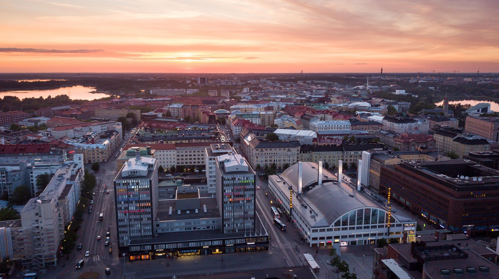

Helsinki
Helsinki – nadbałtycka stolica Finlandii (ok. 1,35 mln mieszkańców w aglomeracji, 2025) to miasto, które łączy fińską funkcjonalność z odważnym spojrzeniem w przyszłość. Od czasów, gdy było Światową Stolicą Designu (2012), rozwija archipelagową strukturę pełną parków, saun i minimalistycznej architektury, stawiając na wysoką jakość życia i inkluzywną kulturę miejską Obecnie Helsinki są liderem globalnej transformacji ekologicznej: zamknięcie elektrociepłowni węglowych obniżyło emisje CO₂ o 43 %, a miasto dąży do neutralności klimatycznej w 2030 r., zerowych emisji w 2040 r. i późniejszej „negatywności węglowej” Ten zielony kurs został wyróżniony tytułem najbardziej zrównoważonego kierunku podróży 2024 w rankingu Global Destination Sustainability Index W praktyce oznacza to gęstą sieć ścieżek rowerowych, transport publiczny oparty na energii odnawialnej, recykling na poziomie prawie 50 % i ambitne projekty smart-city, m.in. odzysk ciepła z wód Zatoki Fińskiej. Dzięki temu Helsinki oferują nie tylko czyste powietrze i wodę, ale też inspirującą wizję, jak może wyglądać przyszłościowa metropolia na północy Europy.